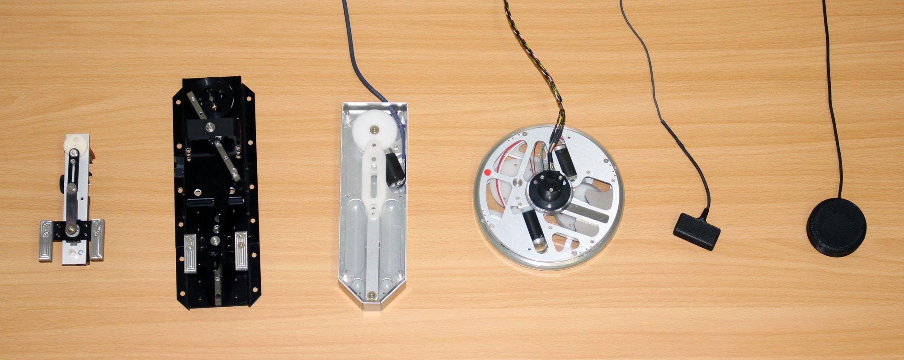
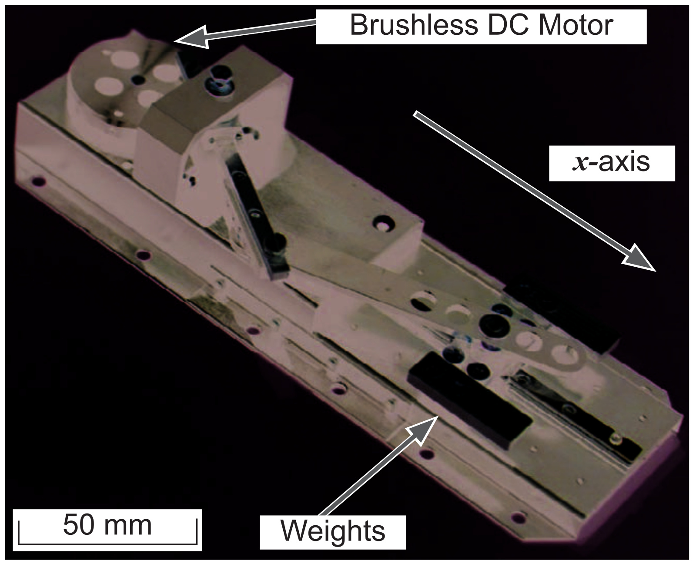
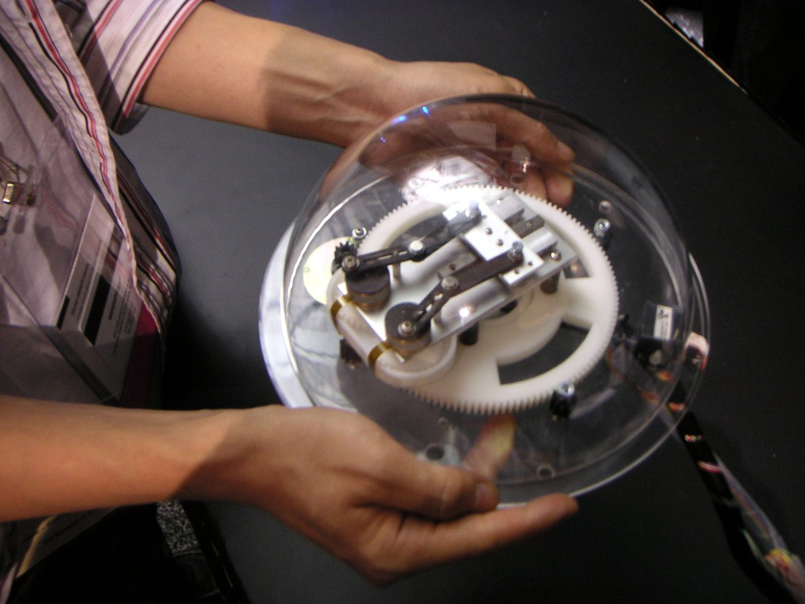
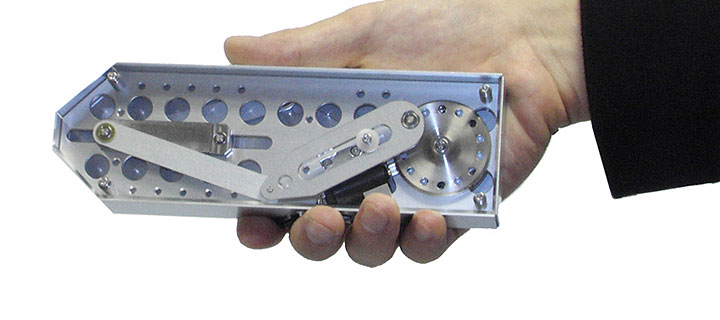
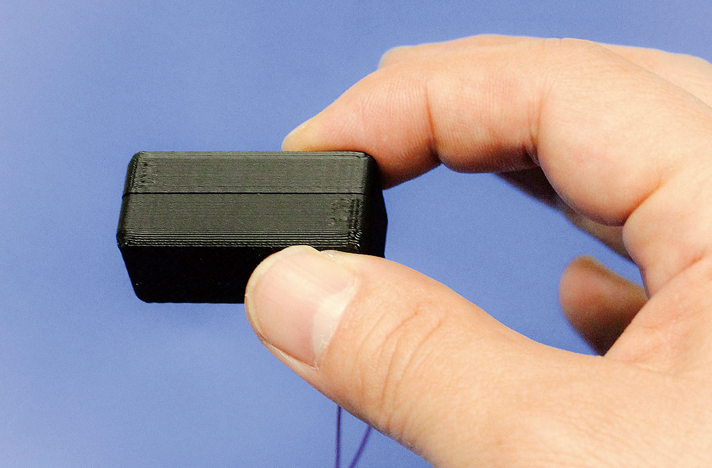
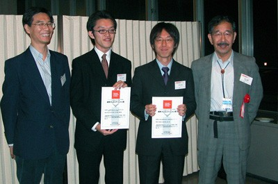
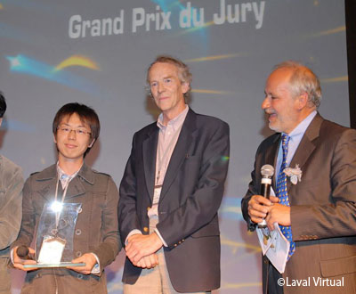
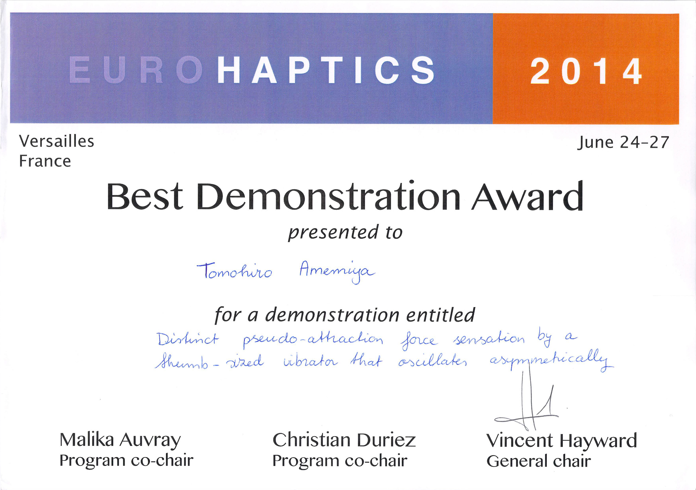

非対称な振動で「引っ張られる」感覚を生み出す。2004年の最初の発表から、現在の研究まで。Creating the sensation of being pulled with asymmetric vibration: from the first presentation in 2004 to today’s research.
「ぶるなび」は、手に持った装置を非対称に振動させることで、どこにも固定していないのに、一方向へ引っ張られるように感じさせる技術です（牽引力錯覚）。雨宮智浩は、安藤英由樹・前田太郎とともに、2004年9月の日本バーチャルリアリティ学会 第9回大会でこの手法を初めて発表し、この発表により2005年3月に同学会の学術奨励賞を受賞しました。その後、初号機からぶるなび3まで装置の小型化を進め、知覚の仕組みの解明や歩行ナビゲーションへの応用に取り組みました。2019年に東京大学へ移ってからは、この研究をVRや新しい提示部位へと発展させています。このページでは、論文・受賞・報道などの公開されている資料をもとに、その歩みを紹介します。Buru-Navi is a technique that vibrates a handheld device asymmetrically so that it feels as if it is pulling in one direction even though it is not fixed to anything (the pulling illusion). Together with Hideyuki Ando and Taro Maeda, Tomohiro Amemiya first presented the method at the 9th Annual Conference of the Virtual Reality Society of Japan in September 2004, and for this presentation he received the society’s presentation award in March 2005. He went on to make the device smaller, from the first model to Buru-Navi3, while studying how the sensation is perceived and applying it to pedestrian navigation. Since moving to the University of Tokyo in 2019, he has extended this research to VR and to new parts of the body. This page tells that story through publicly available papers, awards and press coverage.
30秒でわかる「ぶるなび」：歴代の装置、引っ張られるように感じる仕組み、歩行案内・ゲーム・VRへの応用を紹介します（字幕付き、音声なし）。Buru-Navi in 30 seconds: the devices over the years, how the pulling sensation arises, and its use in walking guidance, games and VR (Japanese captions, no sound).
250 g → 42 g初号機（2007年）からぶるなび3（2014年）へFrom the first model (2007) to Buru-Navi3 (2014)
34このページで参照している論文の数Papers cited on this page
68新聞・テレビ・雑誌・Webでの紹介（下の一覧）Items of press coverage (listed below)
それぞれの根拠は、下の各欄の「根拠となる論文・発表資料」に示しています。The evidence for each figure is given under “Papers and presentation records” in the sections below.
初期開発チームThe original development team
ぶるなびは、NTTコミュニケーション科学基礎研究所の3名の研究チームから生まれました。2004年の最初の発表から、2006年の論文誌、2007年の Laval Virtual での受賞まで、この3名で発表しています。Buru-Navi was born from a team of three researchers at NTT Communication Science Laboratories. From the first presentation in 2004 through the journal paper in 2006 to the award at Laval Virtual in 2007, the work was presented by these three.
雨宮 智浩Tomohiro Amemiya現 東京大学 教授Now Professor, The University of Tokyo
安藤 英由樹Hideyuki Ando現 大阪芸術大学 教授Now Professor, Osaka University of Arts
前田 太郎Taro Maeda現 大阪大学 教授Now Professor, Osaka University
初期開発チーム（2004〜2006年ごろ）The original development team (c. 2004–2006)
開発者が語る、ぶるなび誕生の経緯How Buru-Navi was born, in the developer’s words
「ぶるなび」という名前の由来Where the name “Buru-Navi” came from
当初はカタカタと音が鳴るので、「カタカタマシン」と呼んでいました。その後、覚えやすい名前にしようと、当時人気だったグルメサイトの名前の響きから着想を得て命名しました。展示などを通じていろいろなところで覚えてもらえるようになったので、いつのまにか正式名称になりました。At first it made a clattering noise, so we called it the “Katakata Machine” (katakata is the Japanese word for a clattering sound). Later, wanting a catchier name, we took inspiration from the sound of the name of a popular restaurant-guide website at the time. As people in many places came to remember the name through exhibitions and demonstrations, it gradually became the official name.
いちばん苦労したことThe hardest part
「言われてみれば、なんとなく力のように感じる」という状態が長く続き、何を変えれば錯覚が生じるのかを探る期間が長くかかりました。この錯覚が実現できると知っていればよかったのですが、そもそもこうした錯覚を作り出せるのかも含めて、もとのアイデアが間違っているのか、やり方が悪いのか、正解がないがゆえに悩み続けたことです。For a long time, the sensation was only something that felt vaguely like a force once you were told to look for it, and it took a long period of exploration to find out what had to change to produce the illusion. It would have been easier had I known that the illusion could be achieved, but with no right answer to go by, not even whether such an illusion could be created at all, I kept wondering whether the original idea was wrong or whether my approach was at fault.
引っ張られる感覚の仕組みHow the pulling sensation works
ぶるなびは、装置内部のおもりの往復運動を利用し、手に伝わる振動の加速度波形を非対称にする装置です。振動による力は1周期で平均すると釣り合っていても、持っている人には、一方向に引っ張られるように感じられます。この「牽引力錯覚」には、人が刺激の強さや時間的な変化を感じ取る際の非線形な特性が関係すると考えられています。Buru-Navi uses the back-and-forth motion of a weight inside the device to make the acceleration waveform of the vibration transmitted to the hand asymmetric. Even though the force of the vibration balances out when averaged over one cycle, the person holding the device feels as if it is pulling in one direction. This “pulling illusion” is thought to involve the nonlinear characteristics with which people perceive the intensity and temporal change of stimuli.
雨宮らの2006年の論文では、知覚の非線形性を用いたモデルでこの錯覚を説明しています。ただし、この錯覚が生じる生理学的な仕組みには、まだ解明されていない点が残されています。A 2006 paper by Amemiya and colleagues explains the illusion with a model based on perceptual nonlinearity. Parts of the physiological mechanism behind the illusion, however, remain to be clarified.
非対称振動の原理の図Diagram of the principle of asymmetric vibration
よくある質問Frequently asked questions
実際に手を引っ張っているのですか？Is the device actually pulling the hand?
装置はどこにも固定されておらず、振動による力は1周期で平均すると釣り合っています。それでも引っ張られるように感じるのは、加速度波形の非対称性と、人が刺激の強さや時間的な変化を感じ取る特性によるものと考えられています（牽引力錯覚）。The device is not fixed to anything, and the forces from the vibration balance out when averaged over one cycle. The pulling sensation is thought to arise from the asymmetric acceleration waveform together with the way people perceive the intensity and temporal change of stimuli (the pulling illusion).
普通の振動と何が違うのですか？How is this different from ordinary vibration?
携帯電話などの普通の振動は、加速度波形がほぼ左右対称なので、ぶるぶると震える感じはしても、特定の「方向」は感じません。ぶるなびは、一方向には強く短く、反対方向には弱く長く力が加わるように、加速度波形を非対称にしています。そのため、ある方向に動いているように感じられます。Ordinary vibration, as in a mobile phone, has a nearly symmetric acceleration waveform, so it feels like buzzing without any particular “direction”. Buru-Navi makes the waveform asymmetric, with a strong, brief force in one direction and a weak, longer force in the other. This makes it feel as if the device is moving in one direction.
誰でも同じように感じますか？Does everyone feel it the same way?
多くの人が引っ張られる感覚を得られますが、感じ方の強さやわかりやすさには個人差があり、持ち方や振動の条件によっても変わります。装置を持った手を自分で動かすと、力の方向をより正しく感じやすくなることもわかっています。Most people feel the pull, but its strength and clarity vary between individuals and with how the device is held and how it is driven. Moving the hand that holds the device has also been shown to make the direction easier to perceive correctly.
スマートフォンの振動でもできますか？Can a smartphone’s vibration do this?
スマートフォンに内蔵されている振動モータには、偏心モータ（ERM：Eccentric Rotating Mass）やLRA（Linear Resonant Actuator）が使われています。一般には対称な振動を生み出すために使われますが、入力信号を工夫することで、非対称な振動を作ることもできます。ぶるなび3では、非対称な振動を出すために、親指ほどの大きさの専用のボイスコイル型振動子を採用しました。The vibration motors built into smartphones are eccentric rotating mass (ERM) motors or linear resonant actuators (LRAs). They are generally used to produce symmetric vibration, but asymmetric vibration can also be produced by designing the input signal. For Buru-Navi3, we adopted a dedicated thumb-sized voice-coil vibrator to produce asymmetric vibration.
どの方向にでも引っ張れますか？Can it pull in any direction?
1つの振動子が引っ張る向きは、往復運動の軸に沿った方向です。振動の方向を変えれば、任意の方向に引っ張る感覚を出せます。A single vibrator pulls along the axis of its back-and-forth motion. By changing the direction of the vibration, a pulling sensation can be created in any direction.
歴代の装置Devices over the years
試作機からぶるなび3までの装置を並べました。何が変わってきたかを、下の表にまとめています。Devices from the first prototype to Buru-Navi3, side by side. The table below summarizes what changed.

装置Device
年Year
形・重さForm and weight
仕組みMechanism
引っ張る方向Pulling direction
何が変わったかWhat changed
最初の試作機The first prototype
2004
—
おもりの往復運動Back-and-forth motion of a weight
1方向One direction
原理を確かめた最初の装置The first device to test the principle
「ぶるなび」初号機The first Buru-Navi
2007
コードレス電話ほどの箱形、約250 gBox about the size of a cordless phone, about 250 g
スライダクランク機構Slider-crank mechanism
1方向One direction
手に持って使える形にA form that can be held in the hand
積層型デバイスStacked-type device
2009
—
振動機構を積み重ねるStacked vibration mechanisms
東西南北の4方向Four cardinal directions
複数の方向を案内できるようにGuidance in several directions
ぶるなび2Buru-Navi2
2011
DVDと同じ直径の円盤形、約260 gDisc the size of a DVD, about 260 g
円盤内の振動機構Vibration mechanisms in a disc
360度の任意の方向Any direction through 360°
どの方向にも引っ張れるようにPulling in any direction
ぶるなび3Buru-Navi3
2014
親指ほどの大きさ、約42 gAbout the size of a thumb, about 42 g
非対称に振動する振動子A vibrator driven asymmetrically
1方向One direction
指先でつまめる大きさにSmall enough to pinch between the fingers
最初の発表からぶるなび3までを、できごとと、その根拠となる論文・発表資料で示します。技術解説や報道などの紹介記事は、どのように紹介されたかを示す資料として、分けて載せています。From the first presentation to Buru-Navi3: what happened, with the papers and presentation records that support it. Technical articles, press coverage and other introductions are listed separately, as a record of how the work was introduced.
2004年9月、雨宮智浩・安藤英由樹・前田太郎（いずれも当時 NTTコミュニケーション科学基礎研究所）の3名は、日本バーチャルリアリティ学会 第9回大会で「偏加速度周期運動による把持型方向誘導デバイスの開発」を発表しました。これが、この手法の最初の発表です。この発表により、雨宮は2005年3月に同学会の学術奨励賞（口頭発表部門）を受賞しました。In September 2004, Tomohiro Amemiya, Hideyuki Ando and Taro Maeda (all then at NTT Communication Science Laboratories) presented “Development of Direction Guidance Device using Biased Acceleration in Periodic Motion” at the 9th Annual Conference of the Virtual Reality Society of Japan (VRSJ). This was the first presentation of the method. For this presentation, Amemiya received the society’s presentation award (oral presentation category) in March 2005.
装置内部のおもりの往復運動を利用して、手に伝わる振動の加速度波形を非対称にすると、どこにも固定していない装置でも、一方向に引っ張られるように感じられることを示しました。人が刺激の強さや時間的な変化を感じ取る際の、非線形な特性に着目した手法です。Using the back-and-forth motion of a weight inside the device to make the acceleration waveform of the vibration transmitted to the hand asymmetric, the team showed that even an ungrounded device is felt to pull in one direction. The method focuses on the nonlinear characteristics with which people perceive the intensity and temporal change of stimuli.
2005年3月には World Haptics（イタリア・ピサ）で国際会議の論文として発表し、2006年8月には SIGGRAPH の Emerging Technologies で展示しました。同じ年、3名による論文が日本バーチャルリアリティ学会論文誌に掲載されました。「ぶるなび」という名前も、この年から使っています。この年の展示は、朝日新聞や英国の New Scientist などで報じられています。In March 2005 the work was presented internationally at World Haptics in Pisa, Italy, and in August 2006 the device was exhibited at SIGGRAPH Emerging Technologies. A journal paper by the three authors appeared in the Transactions of the VRSJ the same year. The name “Buru-Navi” has also been in use since that year. The 2006 exhibition was reported by the Asahi Shimbun in Japan and by New Scientist in the UK, among others.

最初の試作機（2004年ごろ）The first prototype (c. 2004)

SIGGRAPH 2006 Emerging Technologies での展示Exhibit at SIGGRAPH 2006 Emerging Technologies
2007年には、手に持って使う「ぶるなび」初号機を公開しました。コードレス電話ほどの大きさの箱形で、重さは約250 g。筒の中のおもりを、スライダクランク機構で非対称に往復させます。In 2007, the first handheld Buru-Navi was shown to the public: a box about the size of a cordless phone, weighing about 250 g, in which a slider-crank mechanism moves a weight back and forth asymmetrically inside a cylinder.
同年2月にはテレビ東京「ワールドビジネスサテライト」で紹介され、4月にはフランスのVRの祭典 Laval Virtual で審査員グランプリ（Grand Prix du Jury）を受賞しました。In February 2007 it was featured on TV Tokyo’s “World Business Satellite”, and in April it received the Grand Prix du Jury at Laval Virtual in France.
この時期に、引っ張られる感覚が生じる条件や、方向をどの程度正しく感じ取れるかといった知覚特性を明らかにし、非対称振動で物の重さの感じ方が変わることも示しました。非対称な加速度を効率よく生み出す機構の設計や、初心者のウェイターに客の場所を伝えるお盆などの応用にも取り組みました。In this period, the perceptual characteristics of the sensation were clarified, including the conditions under which it arises and how accurately its direction is perceived, and asymmetric oscillation was shown to change the perceived heaviness of an object. Work also covered mechanisms that generate asymmetric acceleration efficiently, and applications such as a tray that tells novice waiters where a customer is.

「ぶるなび」初号機（2007年、約250 g）The first Buru-Navi (2007, about 250 g)
Laval Virtual 2007 での展示・受賞Exhibit and award at Laval Virtual 2007
2008年には、緊急時に視覚障害者を避難誘導する装置の研究を、京都市消防局と始めました。In 2008, research began with the Kyoto City Fire Department on a device for guiding visually impaired people to safety in emergencies.
視覚障害者の歩行誘導には、非対称振動を行う振動機構を積み重ねた積層型のデバイスを使いました（ACM ASSETS 2009）。東西南北の方向に引っ張る感覚を出せます。京都市消防局・京都府立盲学校と行った歩行実験では、体育館内に設けた経路で、23名中21名が、途中の進路修正を含めて歩行課題を完了しました。この研究は、総務省消防庁の競争的研究費（消防防災科学技術研究推進制度）にも採択されました。For guiding visually impaired pedestrians, a stacked-type device, built by stacking mechanisms that vibrate asymmetrically, was used (ACM ASSETS 2009). It can pull in the four cardinal directions. In a walking experiment with the Kyoto City Fire Department and the Kyoto Prefectural School for the Blind, 21 of 23 participants completed the walking task along a route set up in a gymnasium, including trials in which they corrected their course along the way. The work was also selected for competitive research funding from Japan’s Fire and Disaster Management Agency.
複数のパルスを組み合わせてなめらかに引っ張る装置など、提示手法の研究も進めました。2011年6月には、日本経済新聞などが「次世代ナビ」として報じ、米国の CNET News も取り上げました。Presentation methods were also studied, such as a device that combines multiple pulses to pull smoothly. In June 2011, the Nikkei and other Japanese newspapers reported it as a “next-generation navigation system”, and CNET News in the US also covered it.
ぶるなび2：歩行者の経路案内と、ねじる力の錯覚Buru-Navi2: pedestrian navigation and a torque illusion
続いて開発した「ぶるなび2」は、DVDと同じ直径の円盤形（約260 g）で、360度の任意の方向に引っ張ることができます。円盤形のぶるなび2を手に持ち、手を動かして引っ張られる方向を確かめながら進む、歩行者向けの経路案内を提案し、SIGGRAPH 2012 と IEEE VR 2013 で発表しました。Buru-Navi2, developed next, is a disc with the same diameter as a DVD (about 260 g) that can pull in any direction through 360 degrees. Route navigation for pedestrians, in which users hold the disc-shaped Buru-Navi2 and check the pulling direction by moving their hands, was proposed and presented at SIGGRAPH 2012 and IEEE VR 2013.
2012年には、フジテレビやテレビ朝日の番組でも紹介されました。さらに、回転するおもり（フライホイール）を短く非対称に回すことで、ねじるような力（トルク）を感じさせられることも示しました。In 2012, the work was also featured on programs on Fuji TV and TV Asahi. In addition, brief, asymmetric rotation of a rotating weight (a flywheel) was shown to convey a twisting force (torque).
ぶるなび3：親指サイズへBuru-Navi3: down to the size of a thumb
2014年に公開した「ぶるなび3」は、クランク機構をやめ、親指ほどの大きさの振動子を非対称に振動させます。初号機の約250 gから約42 gへと小型軽量化しました。指先でつまむだけで、はっきりと引っ張られる感覚が得られます。Buru-Navi3, shown in 2014, drops the crank mechanism and instead drives a thumb-sized vibrator asymmetrically. It is smaller and lighter, down from about 250 g for the first model to about 42 g. Simply pinching it between the fingers gives a distinct sensation of being pulled.
同年6月の EuroHaptics 2014 で Best Demonstration Award を受賞。8月には SIGGRAPH 2014 の Emerging Technologies（カナダ・バンクーバー）で展示し、9月には経済産業省の Innovative Technologies 2014 に選ばれました。In June, it received the Best Demonstration Award at EuroHaptics 2014. In August it was exhibited at SIGGRAPH 2014 Emerging Technologies in Vancouver, Canada, and in September it was selected for Innovative Technologies 2014 by Japan’s Ministry of Economy, Trade and Industry.
日本経済新聞（夕刊1面）やテレビ東京「ワールドビジネスサテライト」で紹介されたほか、MIT Technology Review は、SIGGRAPH を前にぶるなび3を「力の錯覚（force illusions）」として取り上げました。It was featured on the front page of the Nikkei evening edition and on TV Tokyo’s “World Business Satellite”, and ahead of SIGGRAPH, MIT Technology Review covered Buru-Navi3 under the heading of “force illusions”.
ぶるなび3を使って、知覚の仕組みの研究も進めました。細かな突起が並んだ面に軽く触れると方向がわかりやすくなること（SIGGRAPH Asia 2015）、装置を持った手を自分で動かすと力の方向を正しく感じやすくなること（IEEE Transactions on Haptics 2016）を示しています。2016年4月には、NHKワールドの番組「The Wonder of Senses」で、雨宮のインタビューとぶるなびの開発の歴史が紹介されました。Buru-Navi3 was also used to study how the sensation is perceived: lightly touching a surface with an array of small pillars makes the direction easier to perceive (SIGGRAPH Asia 2015), and moving the hand that holds the device improves perception of the force direction (IEEE Transactions on Haptics, 2016). In April 2016, the NHK World program “The Wonder of Senses” featured an interview with Amemiya and the history of Buru-Navi’s development.

指先でつまむ「ぶるなび3」（2014年、約42 g）Buru-Navi3 pinched between the fingers (2014, about 42 g)
この系譜の範囲 ここに示したのは、雨宮が筆頭で発表してきた、2004年の最初の発表からぶるなび3（2014年）までの研究です。原理の提案（2004年）、「ぶるなび」の名前（2006年）、初号機からぶるなび3までの開発と知覚の仕組みの解明は、上に示した論文・発表資料と受賞の記録で確かめられます。その後にNTTから発表された「ぶるなび4」以降の装置は、雨宮の研究とは別に進められたもので、この系譜には含めていません。Scope of this lineage This lineage covers the research that Amemiya presented as first author, from the first presentation in 2004 to Buru-Navi3 (2014). The proposal of the principle (2004), the name “Buru-Navi” (2006), and the development from the first model to Buru-Navi3, together with the studies of how the sensation is perceived, can all be confirmed in the papers, presentation records and award records cited above. Devices announced by NTT after that, from “Buru-Navi4” onward, were developed separately from Amemiya’s research and are not included in this lineage.
東京大学での発展（2019–）Developments at the University of Tokyo (2019–)
2019年7月、雨宮は東京大学に移りました。ぶるなびで培った「非対称振動による牽引力錯覚」を出発点に、VRでの力の表現、ほかの錯覚との組み合わせ、指先以外の部位への提示へと研究を広げています。それぞれの研究が、ぶるなびの系譜の何を受け継いでいるかを、カードの上のリンクで示しました。In July 2019, Amemiya moved to the University of Tokyo. Starting from the pulling illusion from asymmetric vibration developed through Buru-Navi, the research has expanded to force presentation in VR, combinations with other illusions, and presentation to parts of the body other than the fingertips. The link at the top of each card shows which part of the Buru-Navi lineage the study builds on.雨宮智浩のWebサイトTomohiro Amemiya’s website
牽引力錯覚の研究は、ほかの研究グループにも広がりました。2015年ごろから筑波大学でこの研究を始めた田辺健氏らとともに、牽引力錯覚の特性を、提示手法・知覚の仕組み・応用の観点から整理しました。Research on the pulling illusion has spread to other groups. Together with Takeshi Tanabe, who began studying it at the University of Tsukuba around 2015, and colleagues, this review organizes the characteristics of the pulling illusion in terms of presentation methods, perceptual mechanisms and applications.
非対称振動刺激による牽引力錯覚の研究動向
田辺健, 雨宮智浩, 遠藤博史, 井野秀一
日本バーチャルリアリティ学会論文誌, Vol. 25, No. 4, pp. 291–301, 2020.
重さの錯覚を、指先でつまんだ物へA heaviness illusion for pinched objects
指先に重力の向きの非対称振動を与えると、指でつまんだ物体が重く感じられることを示しました。Shows that asymmetric oscillation in the direction of gravity on the fingertips increases the perceived heaviness of a pinched object.
Asymmetric Gravitational Oscillation on Fingertips Increased the Perceived Heaviness of a Pinched Object
Tomohiro Amemiya
HCI International 2021 (HIMI 2021), LNCS 12765, pp. 247–256, July 2021.
運動錯覚と組み合わせて、感覚を強めるStrengthening the illusion with a kinesthetic illusion
腱振動によって手が動いたように感じる運動錯覚を、非対称振動による牽引力錯覚と組み合わせることで、知覚される力の感覚が強まることを示しました。関連する国内発表（2023年）は、日本バーチャルリアリティ学会の学術奨励賞を受賞しています。Shows that combining a kinesthetic illusion of hand movement induced by tendon vibration with the pulling illusion strengthens the perceived force. A related presentation in Japan (2023) received the presentation award of the Virtual Reality Society of Japan.
Synergistic Illusions: Enhancing Perceptual Effects of Pseudo-Attraction Force by Kinesthetic Illusory Hand Movement
Takuya Noto, Takuto Nakamura, Tomohiro Amemiya
IEEE Transactions on Haptics, Vol. 17, No. 4, pp. 729–741, 2024.
指を空けたまま、引っ張られる感覚と重さをTraction and weight with the fingers left free
薬指・小指と手のひらに巻くバンドに2つの振動子を組み込み、親指や人差し指をふさがずに、上下方向に引っ張られる感覚や重さを提示する装置「TractFree」を開発しました。VRのコントローラやハンドトラッキングと一緒に使えます。三菱電機との共同研究です。Develops TractFree, a band worn on the ring finger, little finger and palm with two vibrators that presents vertical pulling and weight sensations without occupying the thumb or index finger, so it can be used together with VR controllers and hand tracking. Joint research with Mitsubishi Electric.
TractFree: Finger-Free Grip for Traction and Weight
Mitsuru Ito, Yuta Itoh, Kazuma Aoyama, Tomohiro Amemiya
座面に複数の振動子を並べて非対称振動を与えることで、座っている身体が引っ張られるような力を感じさせる手法を研究しました。Applies asymmetric vibrations through vibrators distributed across a seat so that a seated person feels as if the body is being pulled.
Pulling Illusions on Seating Surfaces: Force Feedback Induced by Distributed Asymmetric Vibrations on Seats
Koki Fukuda, Kazuma Aoyama, Takuto Nakamura, Tomohiro Amemiya, Takuji Narumi
ACM Symposium on Applied Perception (SAP ’25), Aug. 2025.
指先を空けて、手の腱へLeaving the fingertips free: onto the hand tendons
手の甲側と手のひら側の腱に非対称振動を与えることで、指先に何も着けずに力の錯覚を生み出す手法「AsymDrive」を提案しました。Proposes AsymDrive, which creates force illusions without anything on the fingertips by applying asymmetric vibrations to the tendons on the back and palm sides of the hand.
AsymDrive: Fingertip-Free Force Illusions Induced by Asymmetric Vibrations on Dorsal-Palmar Tendons
Koki Fukuda, Kazuma Aoyama, Hideaki Kuzuoka, Takuji Narumi, Tomohiro Amemiya
VRで移動する速さの感じ方を変えるChanging how fast self-motion feels in VR
どこにも固定しない手持ちの装置による擬似的な牽引力が、VR空間で自分が移動する速さの評価を変えることを示しました。Shows that pseudo-traction from an ungrounded handheld device changes ratings of self-motion speed in VR.
Ungrounded Handheld Pseudo-Traction Changes Self-Motion-Speed Ratings in VR
雨宮智浩「身体感覚インタフェースのデザイン ～ぶるなび誕生秘話とVR応用展開～」自動車技術会 ヒューマンファクター部門委員会, 2020年12月.Tomohiro Amemiya, “Designing body-sense interfaces: the untold story of how Buru-Navi was born and its VR applications” (in Japanese), Human Factors Committee, Society of Automotive Engineers of Japan, December 2020.
受賞・選定Awards and selections
ぶるなびと、そこから発展した研究に関する受賞・ノミネートです。Awards and nominations for Buru-Navi and the research that grew out of it.

ヒューマンインタフェースシンポジウム2005 優秀プレゼンテーション賞Best Presentation Award, Human Interface Symposium 2005

Laval Virtual 2007 Grand Prix du JuryGrand Prix du Jury, Laval Virtual 2007

EuroHaptics 2014 Best Demonstration AwardBest Demonstration Award, EuroHaptics 2014
Laval Virtual 2007 Grand Prix du Jury（審査員グランプリ）、Interfaces de réalité virtuelle 部門賞Grand Prix du Jury and the “Interfaces de réalité virtuelle” category award, Laval Virtual 2007 (France)
EuroHaptics 2014 Best Demonstration Award（1位）、Best Paper Award ノミネートBest Demonstration Award (1st place) and Best Paper Award nominee, EuroHaptics 2014
Distinct pseudo-attraction force sensation by a thumb-sized vibrator that oscillates asymmetrically
日本バーチャルリアリティ学会 学術奨励賞（口頭発表部門）：納藤拓哉（東京大学）Presentation Award (oral presentation category), Virtual Reality Society of Japan: Takuya Noto (The University of Tokyo)
2006年から、国内外の新聞・テレビ・雑誌・Webニュースで紹介されてきました。見出しは掲載時のものです。画像の著作権は、それぞれの権利者にあります。Since 2006, Buru-Navi has been covered by newspapers, television, magazines and news sites in Japan and abroad. Headlines are as published (most are in Japanese). Copyright in each image belongs to its respective owner.
「ぶるなび」は、NTT株式会社の登録商標です。“Buru-Navi” (ぶるなび) is a registered trademark of NTT, Inc.
2004年から2019年6月までの研究は、雨宮がNTTコミュニケーション科学基礎研究所に在籍していたときのものです。The research from 2004 to June 2019 was carried out while Amemiya was at NTT Communication Science Laboratories.
各項目の根拠は、それぞれの欄に示した論文・発表資料と受賞の記録です。報道・紹介記事は、当時どのように紹介されたかを示す資料として載せています。Each item is supported by the papers, presentation records and award records shown in its section. Press coverage and other articles are included as a record of how the work was introduced at the time.